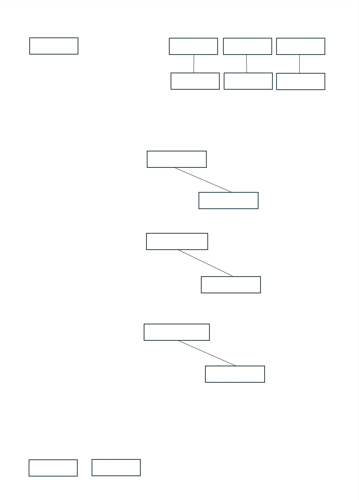
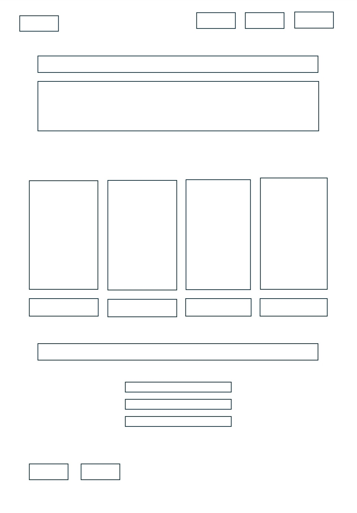
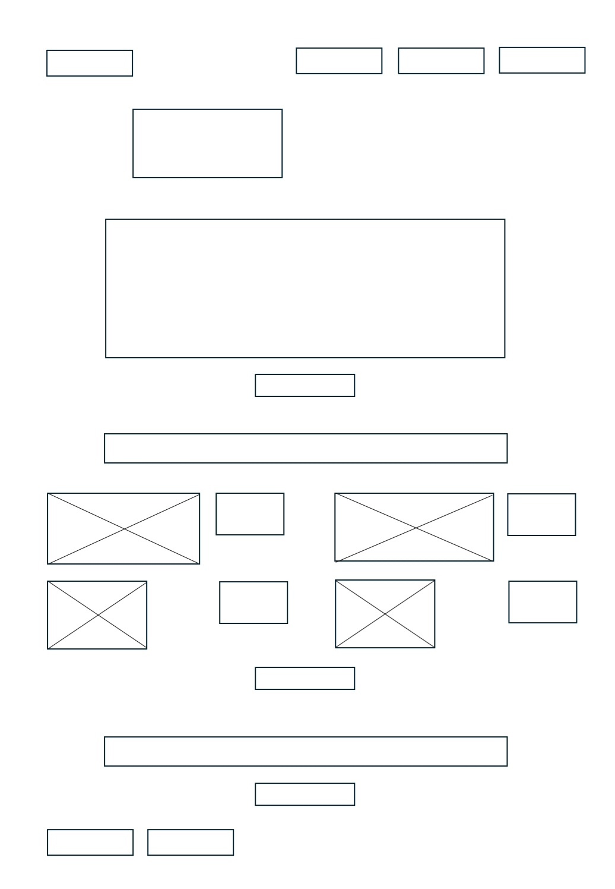
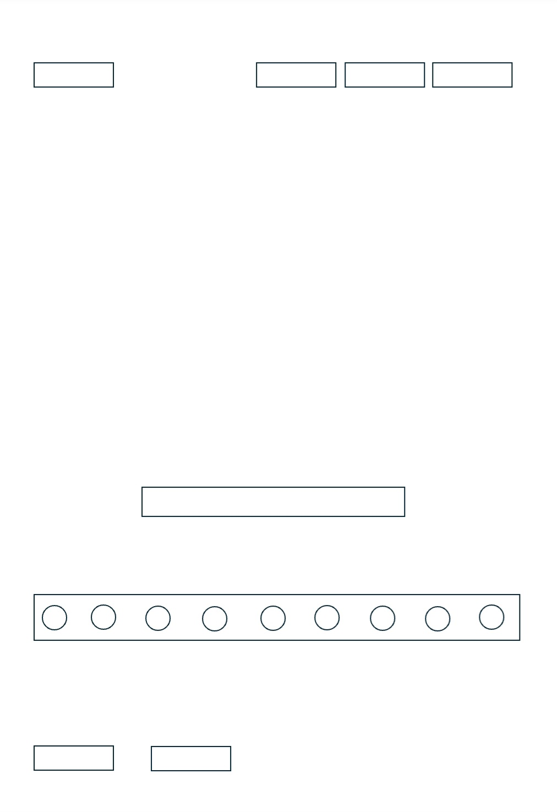

Il sito "ScattoPaese" è una biblioteca digitale, ovvero una biblioteca immateriale in cui vengono conservati e
resi disponibili esclusivamente documenti digitali, sia nati digitalmente o convertiti dagli originali cartacei.
I documenti vengono gestiti, catalogati e resi disponibili agli utenti. La seguente risorsa digitale, si occupa
di descrivere e catalogare una raccolta di dieci immagini, tutte realizzate dal fotografo statunitente
Paul Strand, che fanno parte del libro "Un paese" realizzato dallo scenografo Cesare Zavattini,
autore delle brevi descrizioni riportate sotto ogni immagine nella sezione Catalogo. Alcune delle foto sono
tuttora conservate proprio a Luzzara alla Fondazione "Un paese", la biblioteca-museo dedicata a Cesare
Zavattini.
La progettazione di questo sito nasce dalla volontà di rilanciare il patrimonio storico-artistico dell'Emilia,
in particolare della città di Luzzara, attraverso una selezione di foto d'epoca legate sia al territorio che ai
suoi protagonisti. Lo scopo ultimo è costruire una rete di utenti di età eterogenee, interessate alla
fotografie, ai viaggi e alle attività culturali a tutto tondo, che abbiano la possibilità di conoscersi online e
estendere il loro rapporto anche fuori dal mondo digitale, magari proprio visitando i luoghi e le mostre
presentate nel sito.
Caratteristiche del sito sono l'immediatezza e la facile comprensione della pagina e degli elementi che la
compongono, dovuta in particolar modo alla presenza di immagini e brevi testi. Oltre alla Homepage, sono
presenti tre pagine secondarie che rimandano alla catalogazione delle foto, alla Community e ai contatti. Per la
realizzazione sono stati utilizzati templates, componenti di Bootstrap, servizi di browsing, tools e elementi di
metanavigazione, dove è rintracciabile il Web Project Plan del sito. L'accesso è libero, ma nella pagina
Community è possibile registrarsi e lasciare un commento, al fine di favorire l'integrazione con altri utenti e
scambiarsi opinioni, pareri, considerazioni.
Brief
- Obiettivi comunicativi: promozione della storia locale emiliana e dei suoi protagonisti;
raccolta digitale, catalogazione e promozione di elementi fotografici con rilevanza storica territoriale;
incentivo alla socialità e alla partecipazione a eventi culturali (mostre, visite nei musei, ecc.), grazie
alla sezione dedicata ai commenti degli utenti; valorizzazione del patrimonio artistico-culturale
territoriale.
- Il sito si compone di grafiche essenziali, allo scopo di rendersi il più intuitivo possibile per l'utente
medio, senza tuttavia trascurare le fasce d'età più anziane;
- Si vuole facilitare la navigazione all'interno della pagina per incoraggiare l'interazione all'interno di
un target utente eterogeneo, rilanciare l'attività fotografica e storico-museale, anche tenendo conto della
ripartenza dovuta al periodo post-pandemia, e sensibilizzare il pubblico sul tema;
- Attraverso il concept minimal si è cercato di dare un'impronta moderna e accattivante allo stile della
pagina in modo da coniugare semplicità e cura per l'aspetto estetico finale.
- Target utente: considerati gli elementi selezionati per la biblioteca digitale, il periodo
storico preso in esame e le finalità del progetto, il target utente a cui il sito si rivolge risulta essere
molto eterogeneo: chiunque abbia minime competenze digitali può accedervi e apprendere le informazioni
relative alle fotografie. Inoltre, attraverso questo canale può nascere l'interesse per visitare fisicamente
le collezioni in cui gli elementi digitali sono tuttora conservati, nonchè i luoghi effettivi dove sono state
scattate. L'attività può essere svolta da un pubblico molto vario, famiglie con bambini, giovani con interessi
o curiosità relative al periodo storico preso in esame, al cinema o alla fotografia, e anziani legati ai
propri luoghi d'origine. Alla luce di queste riflessioni, il target utente prevalente si colloca tra i 35-55
anni, ma la partecipazione a mostre fotografiche e l'interesse che può nascere dalla visione del sito coprono
una fascia d'età compresa tra gli 0 e i 99 anni. Tutti gli utenti possono accedere alle medesime funzioni,
l'unica eccezione è rappresentata dalla pagina Community, in cui è possibile registrarsi e lasciare un proprio
commento.
- Messaggio: nella realizzazione di questo progetto, si aspira ad aumentare l'engagement nei
confronti delle tematiche culturali intraprendendo un'azione di promozione e partecipazione sociale, con
un'attenzione particolare al settore fotografico e alla valorizzazione del territorio, della storia locale e
dei luoghi in cui questa si è fatta. Ho ritenuto opportuno concentrarmi su un piccolo campione di dieci
significative fotografie per due motivi: non risultare troppo dispersiva e permettere all'utente di avere un
quadro limitato, ma ben definito, di un preciso momento storico. L'interesse maturato dalla visione dei
materiali, la possibilità di confrontarsi attraverso lo scambio di commenti e di instaurare rapporti con altri
utenti, hanno come fine ultimo l'aggregazione di persone e la scoperta o riscoperta di luoghi d'interesse
storico.
- Accesso: la comunicazione avviene principalmente mediante immagini, breve descrizioni ad
esse relative, e testi riportanti le spiegazioni sul funzionamento della pagina.
- Contenuti e dati: i contenuti visivi sono stati presi dal sito fondazioneunpaese.org,
mentre per le descrizioni delle immagini si è fatto riferimento al lbro "Un paese" (vedi
Bibliografia). Il sito è stato caricato sulla piattaforma Github, pertanto è possibile
reperirlo in rete. A differenza di altri siti, "ScattoPaese" offre una maggiore interazione tra gli utenti
grazie alla possibilità di lasciare commenti; per raggiungere un ampio pubblico, si è fatto ricorso ad una
campagna promozionale su pagine social, specialmente Instagram e Facebook.
Benchmarking
- Competitors: per quanto concerne la prima finalità del sito, i competitors più
significativi risultano essere fondazioneunpaese.org e terradeipoedeigonzaga.it per reputazione, chiarezza del
provider e per l'accuratezza del registro dei contenuti. Inoltre, condividono con "ScattoPaese" la
valorizzazione del territorio e la promozione della storia locale. La risorsa web grandifotografi.com offre un
simile servizio di ricerca e catalogazione fotografica su base internazionale, permettendo la ricerca di
determinati fotografi e delle loro principali opere fotografiche, mentre fotografiaeuropea.it risulta simile
nella presentazione dei contenuti multimediali; tuttavia, non ho individuato competitors che incentivino anche
l'iterazione tra gli utenti.
Struttura e Layout
- Architettura del sito
Fig.1 Mappa concettuale del sito

- Pagina Community
Fig.2 Wireframe Community

- Wireframe
Fig.3 Wireframe Homepage

- Wireframe Linea del tempo
Fig. 4 Wireframe Linea del tempo

Usabilità
- Architettura: immediatamente appare la Homepage suddivisa in cinque sezioni, tutte
accessibili tramite buttons: nella prima è presente un carosello di immagini, nella seconda un rimando al Web
Project Plan, nella terza il catalogo con alcuni elementi in evidenza, nella quarta la possibilità di accedere
alla Community, nella quinta i contatti social e una mappa Google. Sopra la Homepage, nell'header, si trova
una barra di navigazione, in cui è possibile aprire le pagine di navigazione secondaria (Contatti, Catalogo,
Community). Anche nel footer si trova una seconda barra di navigazione contenente alcuni dati in
metanavigazione, come l'AboutUs e la Privacy Policy del sito. Nella pagina Community sono presenti delle cards
con immagini che rimandano direttamente al catalogo e un box, ove sono possibili la registrazione al sito e
lasciare un commento. Il Catalogo è l'unica sezione contenente un sistema di pagination, il quale rimanda all'interno degli elementi del catalogo stesso.
- Look and Feel: nel sito ho optato per uno stile moderno e colorato, tuttavia senza
trascurare l'attenzione e la cura per l'ordine, specialmente nella sezione dedicata al Catalogo. Nella
Homepage ho ritenuto opportuno inserire delle fotografie che anticipassero la materia presa in esame, mentre
la scelta di Navbar e nomi delle sezioni è giustificata dalla semplicità con cui rimandano alle principali
pagine della risorsa web. I colori prevalenti sono nero, bianco e violetto, colori che garantiscono un
immediato contrasto e una facile capacità di lettura. La scelta è stata motivata anche dalle fotografie
stesse, per loro natura in bianco e nero. Lo stile di scrittura si compone principalmente di caratteri Inherit
e Italic, scelti per la loro semplice comprensione. Nell'interfaccia è presente un carousel di immagini, utile
sia ad introdurre l'utente nel tema cardine del sito (la fotografia), sia per rendere più interattiva la
Homepage.
Servizi
- Sistemi di browsing aggiuntivi:
- Raggruppamento in ordine alfabetico: potrebbe risultare utile all'utente per spostarsi più agevolmente all'interno degli oggetti del catalogo, magari ordinando le foto per titolo.
- Ricerca per parole chiave: segnalando gli oggetti della biblioteca digitale potrebbe
potrebbe essere più veloce per l'utente cercare una determinata fotografia, senza doversi spostare tra le
pagine.
- Utilities e tools integrativi:
- Object fit: permette di ridimensionare un'immagine o un video per adattarlo ad un
contenitore;
- Opacity: permette di sfumare il colore degli elementi, poteva essere usato per creare
contrasti di colore nella pagina;
- Mentimeter: serve per sottoporre al pubblico domande e sondaggi, visualizzando le
risposte in tempo reale. Poteva essere aggiunto alla pagina Community, dando agli utenti la possibilità di
fare domande e favorire l'integrazione con altri utenti;
- Google Documenti: elaborare testi, fogli elettronici, presentazioni e sondaggi;
- Google Analytics: raccogliere dati dai siti web per creare report con informazioni
sull'attività del sito.
- Finestre con recensioni (es. ELF Widget): considerando le specificità della pagina Community, potrebbe risultare utile all'utente visualizzare i commenti di altri utenti, al fine di confrontarsi, rispondere e scambiarsi interazioni.
- Altri strumenti, servizi, tool, metodi: nel rispetto degli ideali di collaborazione e
partecipazione del sito, un metodo per promuovere e valorizzare le interazioni tra utenti potrebbe essere
citare la risorsa web all'interno di altre risorse esistenti, al fine di creare una grande rete di
collegamento tra siti che si occupano di tematiche simili.
Bibliografia
- Linguaggi web utilizzati: HTML, CSS, Javascript.
- Strumenti:
- W3SCHOOLS come spunto per alcune istruzioni e tutorial;
- Il libro "HTML&CSS - progettare e costruire siti web" di Jon Duckett per una panormaica più ampia sul
linguaggio HTML-CSS e il suo utiizzo;
- Bootstrap per il reperimento di componenti, servizi di browsing e tools;
- Grayscale theme gratuito di Bootstrap con cui ho costruito la HomePage;
- Stackoverflow.com per consigli su come rendere scorrevole il carosello della HomePage;
- Swiperjs.com per l'inserimento e il movimento delle immagini del carosello;
- Font Awesome per la ricerca degli stili di scrittura;
- Adobe Color per la scelta dei colori e degli abbinamenti;
- Google - Creative Commons per le fotografie di Paul Strand;
- Word per la realizzazione del wireframe e dell'architettura;
- Wirify.com per il layout delle pagine;
- FileZilla per il trasferimento di file;
- Github per la pubblicazione;
- Tutte le didascalie utilizzate sono state tratte dal seguente libro: C. Zavattini, P. Strand, "Un paese",
Giulio Einaudi Editore, Torino, 2021, pp. 6-12-21-25-32-34-47-58-65-78;
- Tutte le immagini sono state reperite dal sito fondazioneunpaese.org, nel pieno rispetto del Fair Use.
Promozione
La promozione del sito avverrà tramite social, in particolare attraverso la condivisione del link alla pagina
via Instagram Stories; da qui, i visitatori potranno accedere alla sezione Community (reperibile sia nel
footer che nella sezione appositamente dedicata, denominata omonimamente) e lasciare un personale commento.